Urban Metabolism
Architecture Advanced Studio Spring 2025
An extention of states of exception
The beginnings of this research emerged through repeated journeys along the river, where I investigated and documented its conditions through video, audio, photography, and field notes. My focus was on sound—its levels, its dispersal, and its absences—tracing zones of noise pollution alongside moments of quiet. Field recordings became a primary tool, accompanied by mapping studies that tracked the flow and direction of water along the spillway. These mappings attempted to translate sonic and kinetic phenomena into spatial diagrams, capturing the relationship between water, sound, and surrounding infrastructure.
The methods of documentation were intentionally tactile and temporal. Recording on VHS and writing field notes on a typewriter grounded the process in physical interfaces, reflecting the material and ephemeral qualities of water itself. Like magnetic tape, water is in constant motion—never fixed, always unfolding. This parallel informed an interest in representing water not as a static object, but as a shifting topology. Hydrophone recordings extended this investigation beneath the surface, revealing submerged acoustic environments and multiple sonic scales. Spectrograms were then used as visual translations of these recordings, offering another layer of interpretation between sound and form.
These explorations led to questions of amplification—both acoustic and architectural. Conventional amplification relies on powered systems, but I became interested in how form alone could shape and project sound. This led to research into horn loudspeakers, not only as technical devices but as spatial constructs. The horn became a model for architecture: a geometry capable of capturing, directing, and amplifying sound without necessarily relying on electronic mediation. Precedents such as the early Western Electric 13A and 15A horns—originally developed for the Vitaphone system in 1920s theaters—offered insight into how complex curvature could compress large acoustic pathways into compact forms. Their hidden placement behind screens further emphasized the paradox of powerful acoustic architecture rendered invisible.
Material studies became central to this line of inquiry. Experiments revealed that within the human hearing range, wood and steel each amplify sound in distinct ways—wood offering warmth and diffusion, steel producing sharper, more reflective resonances. These findings informed a broader interest in how material choice shapes acoustic experience.
At the same time, this work is grounded in an understanding of sound as a social and cultural force. Research into sound system culture in Kingston, Jamaica, highlighted how communities construct powerful sonic environments through collective effort—transforming public space into sites of gathering, performance, and ritual. These systems operate as architectures in their own right, defined not by walls but by vibration, bass, and shared experience.
The work of Pauline Oliveros, particularly her practice of Deep Listening, further shaped this approach. Deep Listening frames sound as an immersive and intentional act, encouraging an awareness of all sonic activity—foreground and background, human and environmental. This expanded notion of listening positions it as both a meditative and communal practice. A speculative moment—a dream of a floating buoy that amplifies underwater sound into the air—became a conceptual bridge, linking hydrophone recordings to architectural amplification.
These lines of inquiry culminated in a proposal for a series of acoustic interventions along the Moshassuck River. At its center is a horn-loaded pavilion that passively amplifies the sound of the water, allowing the river itself to define the acoustic character of the space. Program emerges from this condition, supporting activities such as meditation, performance, gathering, and research.
The project unfolds through four primary interventions. The first consists of small, directional speakers mounted on flagpole-like structures, projecting live river audio—captured via hydrophones—toward nearby industrial and studio spaces. Powered by solar energy, these elements act as sonic beacons, introducing unfamiliar sounds into familiar contexts.
The second intervention is an active horn pavilion constructed from recycled lumber, using mass timber framing and bent lamination to achieve its curved geometry. Solar-powered amplification drives a system that likely operates as a multi-entry horn, combining multiple drivers across frequency ranges into a single acoustic form. This structure functions as both instrument and architecture, amplifying sound into a shared spatial experience.
The third space is a hybrid condition, pairing an active speaker with a passive metal horn. Here, steel is used deliberately for its reflective and resonant properties, producing a sharper acoustic environment. This intervention extends the material research into a more experimental register, contrasting the warmer qualities of wood with the brightness of metal.
The final intervention consists of small, conical wooden horns designed for one or two occupants. These intimate structures encourage deep listening, creating spaces for focused, personal engagement with the surrounding environment.
Across all interventions, the project embraces temporality and decay. The structures are intended to weather, to be overgrown, and to gradually integrate back into the landscape. This process foregrounds a cybernetic relationship between architecture and environment, where sound, material, and time continuously reshape one another.
The physical model developed for this course—a midrange exponential horn constructed from plasma-cut steel with Enid Corcoran—served as a material and acoustic test. Built from reclaimed components, it revealed the complex resonant behavior of steel: rich and expressive, though less suited for high-fidelity reproduction. This prototype points toward a future iteration, potentially installed above a river with a hydrophone and solar-powered amplification system, further extending the dialogue between water, sound, and form.
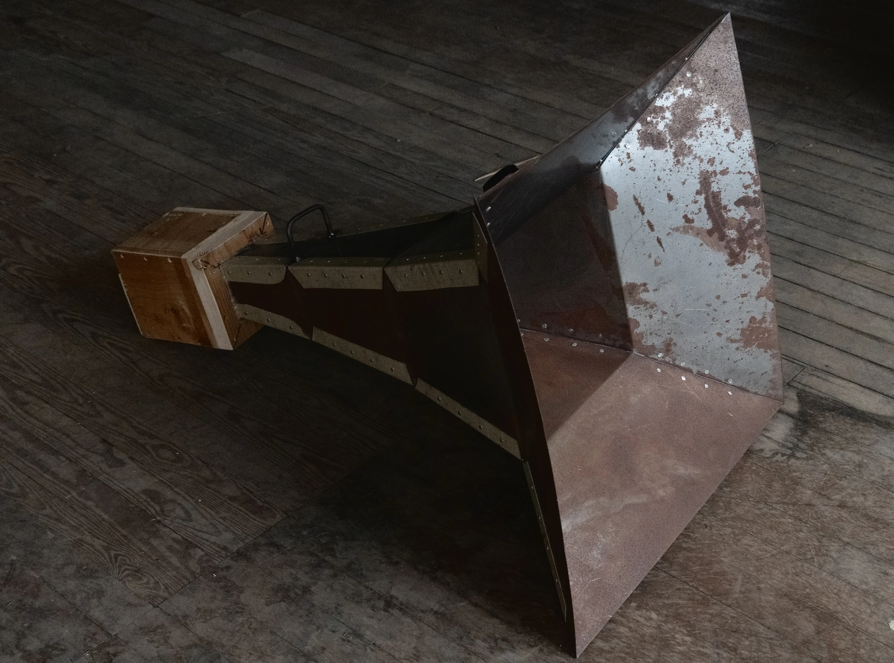
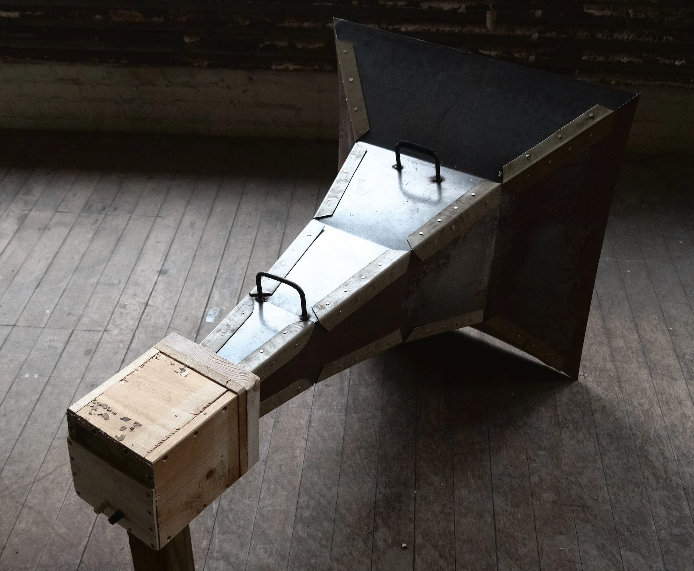
Ultimately, this project brings together field research, sonic experimentation, and architectural design to propose listening as a mode of environmental engagement. Sound is understood not simply as something that occupies space, but as something that constructs it—shaping perception, fostering community, and transforming the overlooked into sites of shared ritual experience.
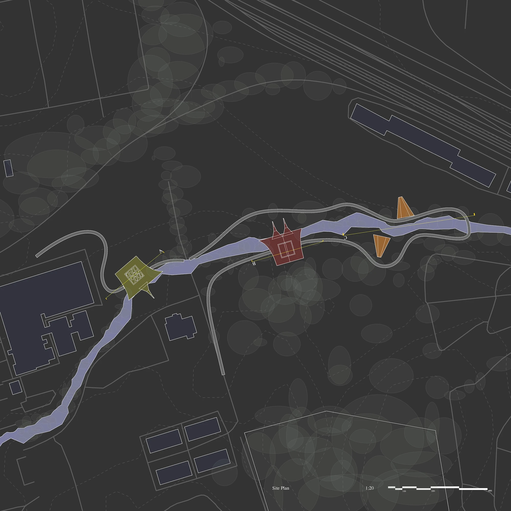
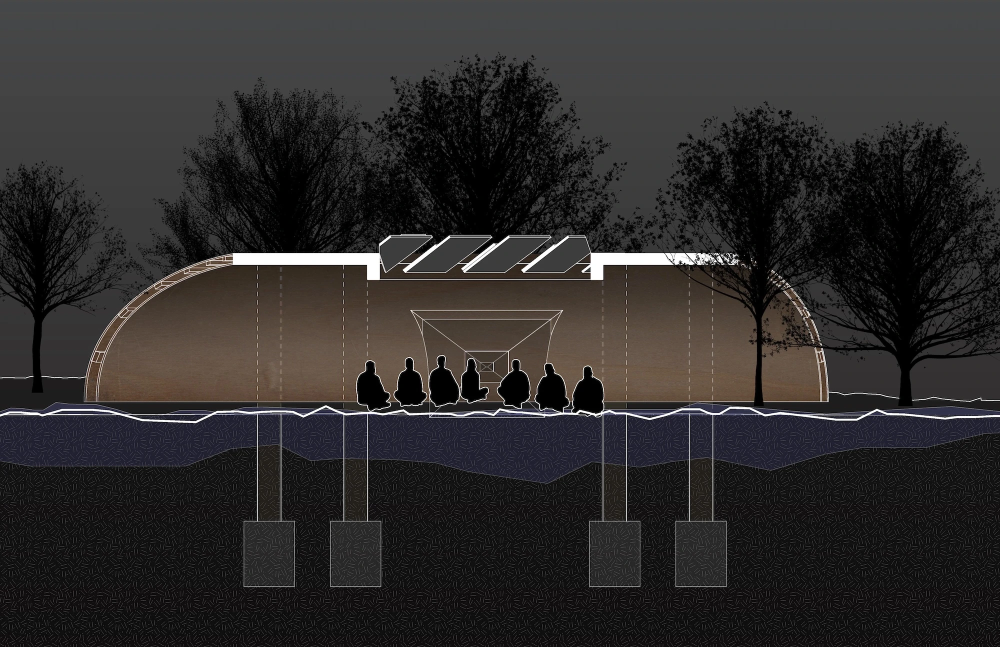
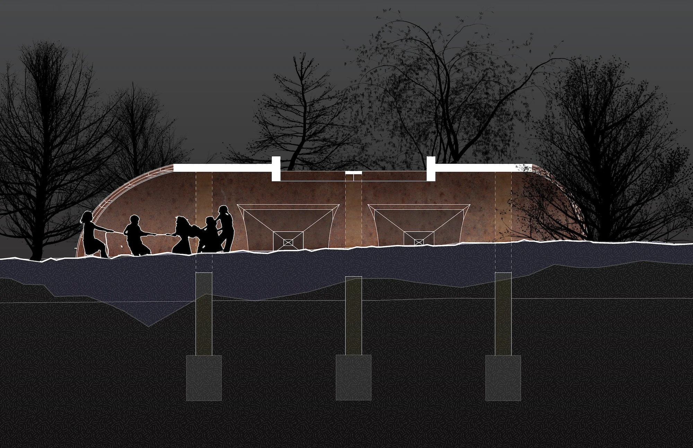
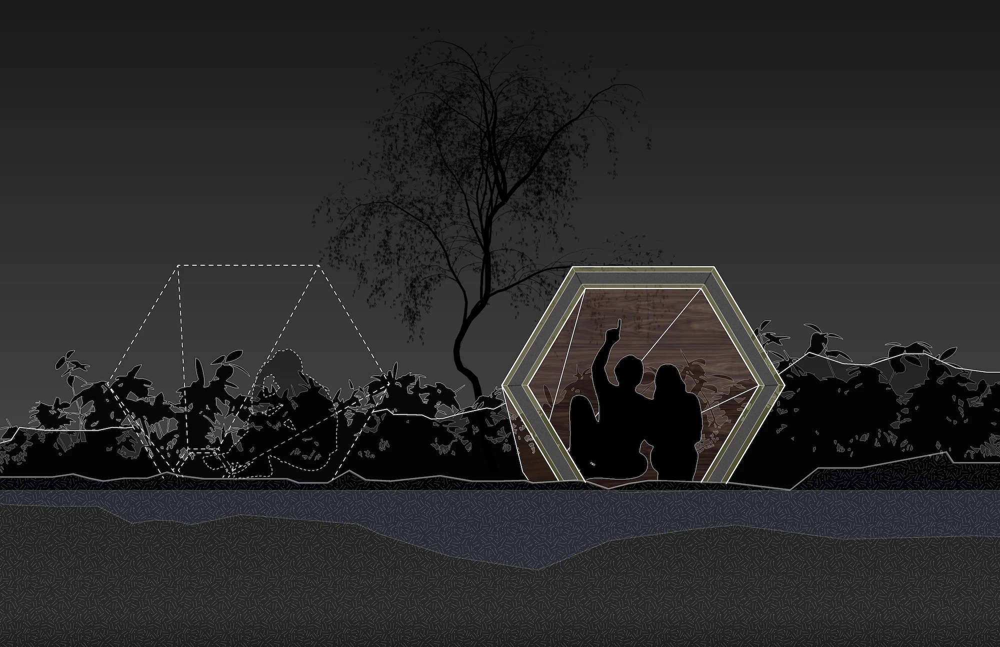
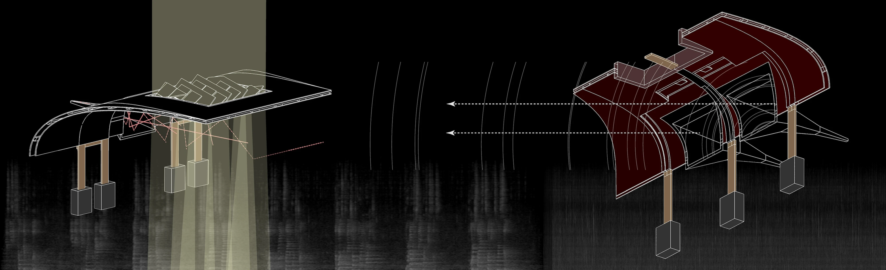
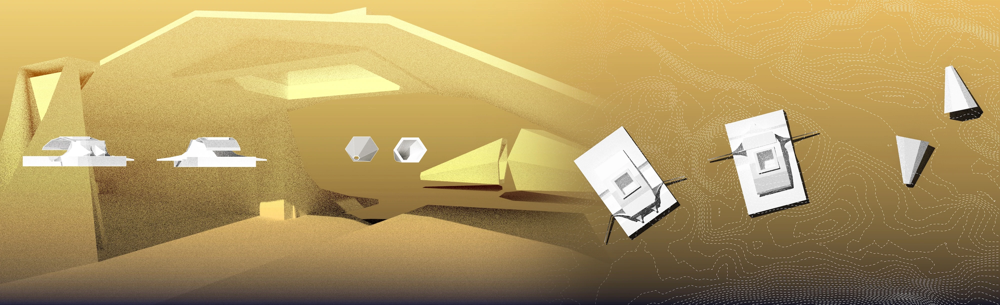
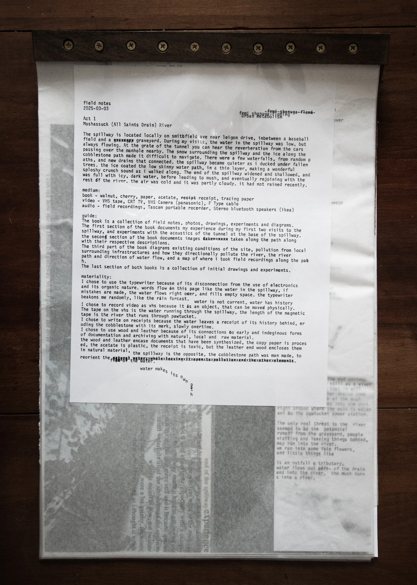
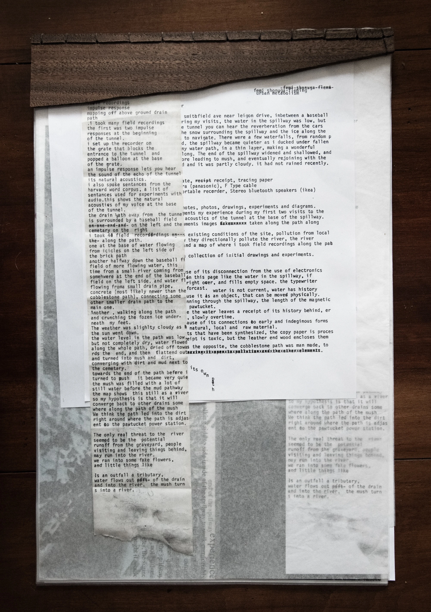
The spillway is located locally on Smithfield Ave near Legion Drive, in between a baseball field and a graveyard. During my visits, the water in the spillway was low but always flowing. At the grate of the tunnel, you can hear the reverberation from cars passing over the nearby manhole. The snow surrounding the spillway and the ice along the cobblestone path made it difficult to navigate. There were a few waterfalls from random paths and new drains that connected. The spillway became quieter as I ducked under fallen trees. The ice coated the low, narrow water path in a thin layer, creating a wonderful sploshy crunch sound as I walked along. The end of the spillway widened and shallowed, and was filled with icy, dark water before leading to mush and eventually rejoining the rest of the river. The air was cold and it was partly cloudy; it had not rained recently.
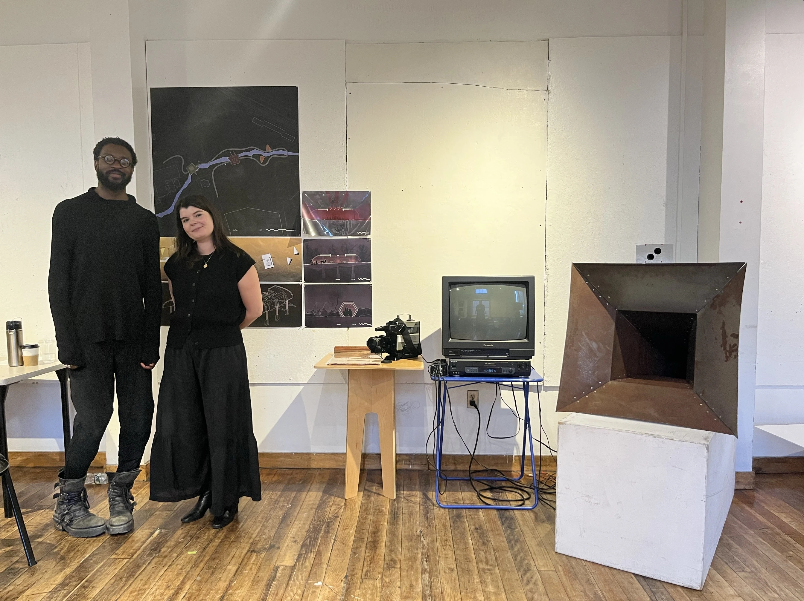